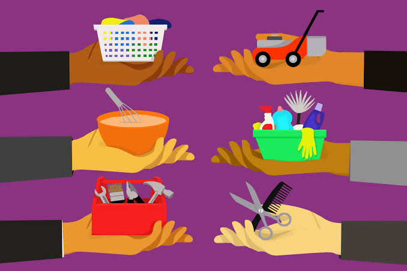
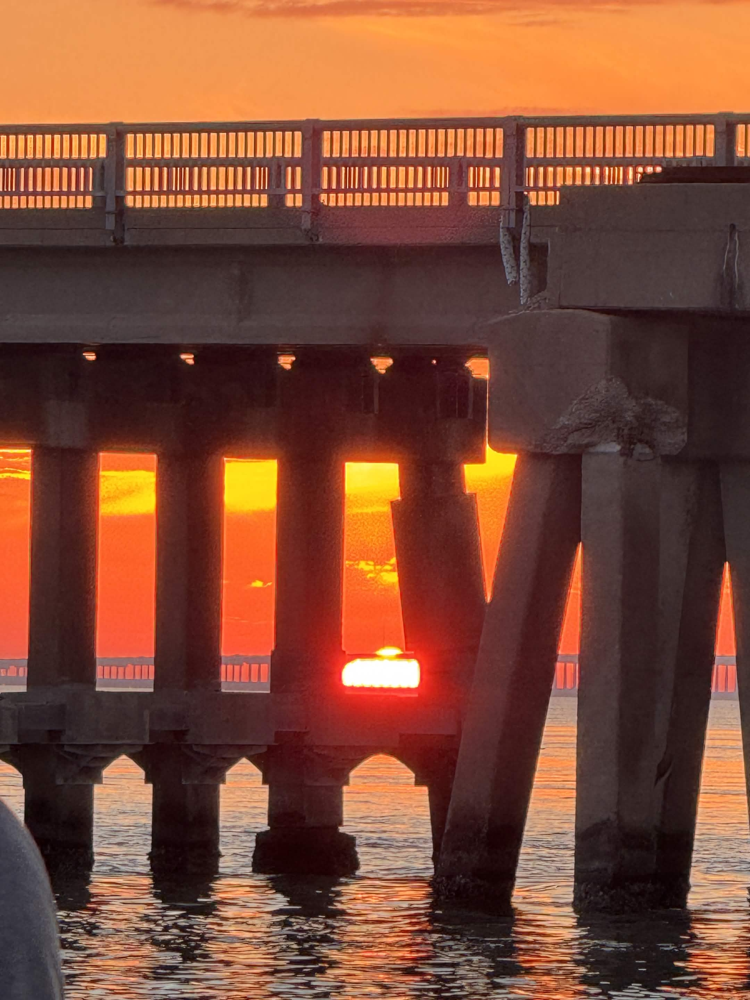
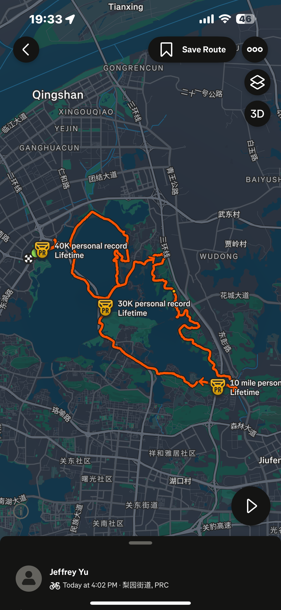

A software where people can barter for items from others based on the value of their own item. I would like to recreate this project in the future in order to benefit smaller communites, for example college students in college Station.

Contributed to an ongoing project of designing a functional underwater robot that detects environments underwater. The project involved a mixture of hardware and software, where team members collaborated together to fix wiring and backend coding issues.
This project is something I want to tackle when I gain enough coding skills. I always liked to play music in the background when I work, and I would like to see the lyrics around sometimes. This will be the primary project I will be focusing on.

This project is something that did not come up to my mind at first. As I traveled to more and more places in the past few years, I sometimes would lose track of the places I went to. As someone who likes to share journey experiences, this project can store the image on the exact date, time, and geographical location and indicated.